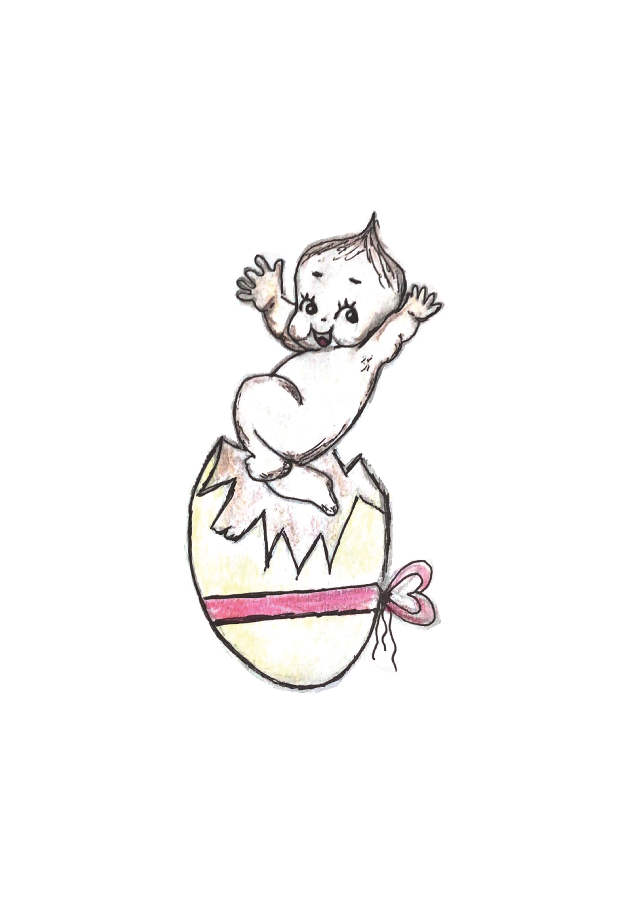
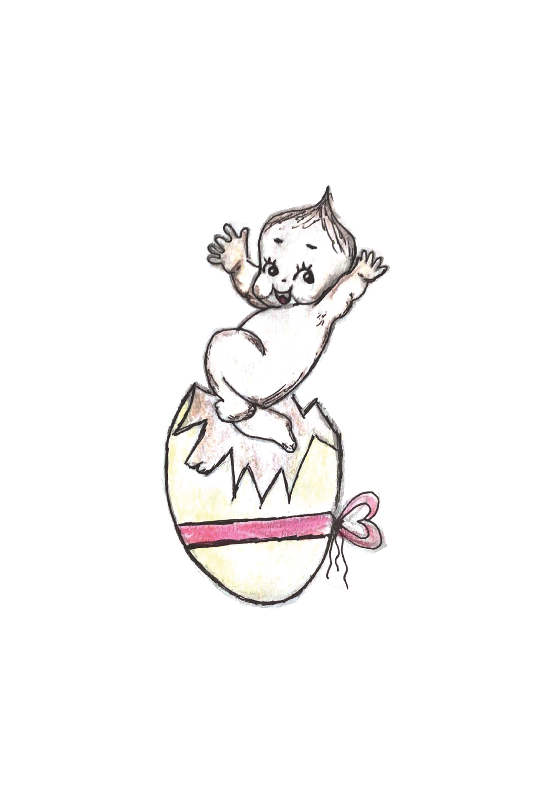

Книга в жанре дневниковых записей“ Письма мертвого сердца”
Современное поколение все чаще обращается к книге за помощью в разных ситуациях в жизни. Книга в жанре дневниковых записей «Письма мертвого сердца» не только о советах, а о любви с первого дня, об ответственности и наставлениях на дальнейшую жизнь от самого близкого человека. Отличительной особенностью дневника является предельная искренность и субъективная форма. Повествование ведется от первого лица, без оглядки на чьё-либо мнение. Благодаря этому создается ощущение интимной близости и сопричастности ко всему происходящему. Согласитесь, что иногда очень хочется заглянуть в чей-то личный мир и узнать, что же творится у человека в голове? Опросив несколько людей, большинство ответили, что книг разных жанров множество, но реалистичности, душевного тепла и искренности совершенно нет, что нельзя сказать о жанре дневниковых записей.


- Основным внешним дополнением к тексту являются авторские иллюстрации, которые выполнены в одной стилистике.
- Книга состоит из 18 глав, этот объем символизирует возраст главного героя.
- Авторская книга в жанре дневниковых записей «Письма мертвого сердца» написана легким и ненавязчивым языком с элементами юмора. Такой стиль написания будет понятен каждому читателю, он представляет из себя повествование с элементами рассуждения, рассуждение с элементами описания, а также свободную форму записи.
- При описании проблем, с которыми сталкивается ребенок, цветовая гамма становится менее яркой, что дает визуальное ощущение эмоциональных переживаний ребенка.